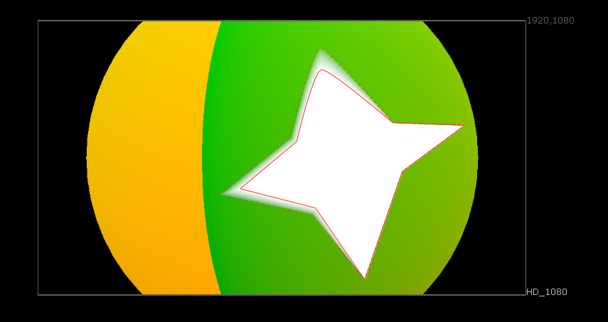
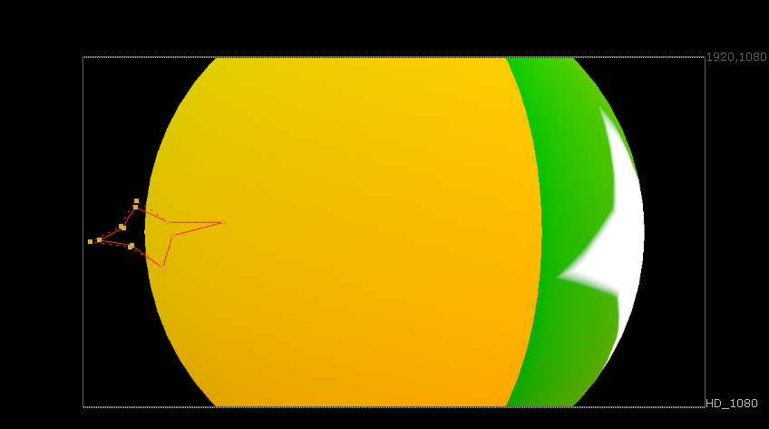
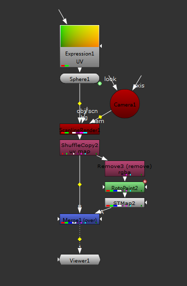

RotoPaint UV映射¶
 基于 uv 层对 RotoPaint 形状创建映射副本，并自动在后面添加一个 STMap 节点使得映射后的形状跟随 uv 运动。
在菜单中选择 编辑 - RotoPaint UV映射 进行创建。
注解
因为基于 UV 贴图的限制，有以下限制：
- 横跨 UV 接缝的形状无法正常映射，可通过拆分为多个形状进行避免。
- 映射后的形状只能保证锚点位置匹配，图形的边会随 UV 变形，可通过增加更多锚点来保证形状接近。
- 为形状添加动画时需要手动将原始形状匹配到每一帧的 UV 位置，不能自动跟踪。
执行命令将为所有选中的 RotoPaint 可见形状创建一个 uv 映射的副本，并隐藏锁定原始形状。
执行命令需要节点包含 uv_map 层，如果没有则会默认使用 rgba.red 和 rgba.green 在节点前创建 ShuffleCopy 节点。
注解
使用 uv_map 而不是 uv，因为 uv 为 Nuke 内置图层名，等同于 forward 层，被 motion 使用。
会自动为选中节点创建 STMap 方便 Merge。
为形状创建的映射副本会带 .UVMap 后缀，
重复执行此命令将会删除之前生成的副本重新进行生成。